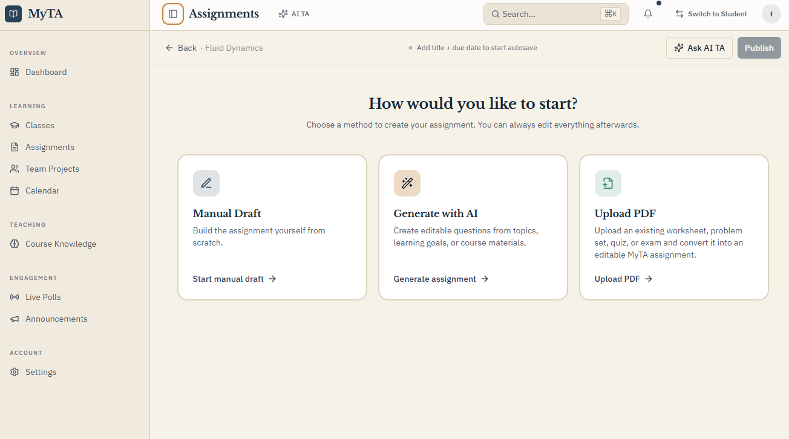
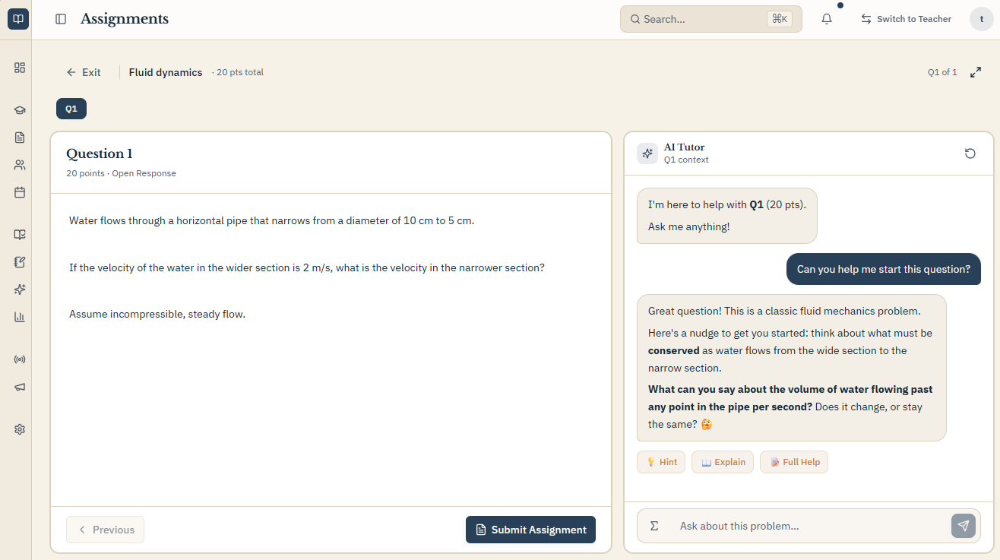
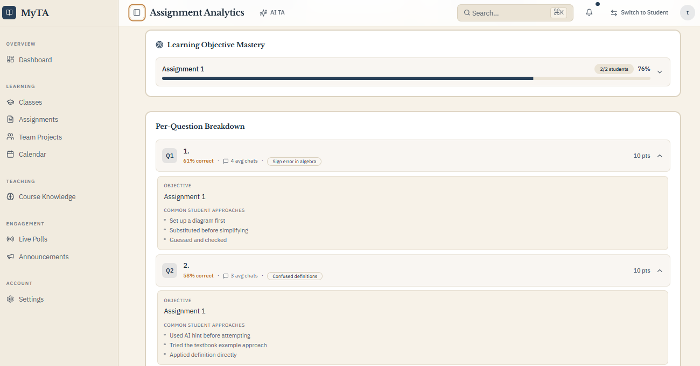

Set the assignment context.
Add approved course materials, set expectations, and define how AI may help.
- Approved materials
- Assignment intent
- Support boundaries

Guided AI for assessed work
MyTA brings course-grounded, guided AI into assignments so students get useful support while instructors see how learning happens.

The instructor problem
The learning in between is mostly invisible: AI use, confusion, help seeking, revision, and understanding before a final answer reaches the instructor.
Prompt, goals, and expectations
AI use, confusion, help seeking, revision, and understanding
One submission at the end
MyTA brings that middle into the course workflow, so instructors can respond before a polished answer hides a gap.
Product walkthrough
Follow one assignment from setup to insight.
Add approved course materials, set expectations, and define how AI may help.

Students get course-grounded questions, hints, and references while owning the final response.
Review where students struggled, requested help, revised, or may need support.

Instructor control
Instructors shape each assignment's context, expectations, and support boundaries. MyTA is structured around the course, not a generic chat window.
Learning design
Support is informed by established learning principles: retrieval, self-explanation, staged scaffolding, and reflection.
Existing workflow
MyTA is intended to reduce disconnected AI use without replacing the LMS.
Designed for LMS integration through LTI. Integrations are in development, and pilots may begin with a standalone experience.
Status: Designed for existing workflows, not as an LMS replacement.
A pilot conversation can make current capabilities, planned integrations, and review needs explicit.
Why MyTA
Publishers, LMS platforms, and tutors bring valuable AI. MyTA is being built around the instructor-defined assignment loop.
Organized around Publisher content, courseware, and assessment workflows.
Instructor consideration A natural fit when the course is built around that publisher's materials and platform.
MyTA begins with The instructor's own context, objectives, support rules, and assignment design.
Organized around AI across course creation, accessibility, assessment, analytics, operations, and support.
Instructor consideration The assignment learning process is one part of a broader platform.
MyTA is built around The assignment loop itself: setup, guided work, and learning signals.
Organized around Student questions, explanations, practice, and self-directed study support.
Instructor consideration The key question is how closely support follows the specific assignment and returns to the course workflow.
MyTA begins with The instructor-defined assignment, guides the student inside it, and returns useful signals.
Pilot MyTA
Bring one assignment and one question about student learning. We can share details and see whether MyTA is a fit.
contact@mytaeducation.com